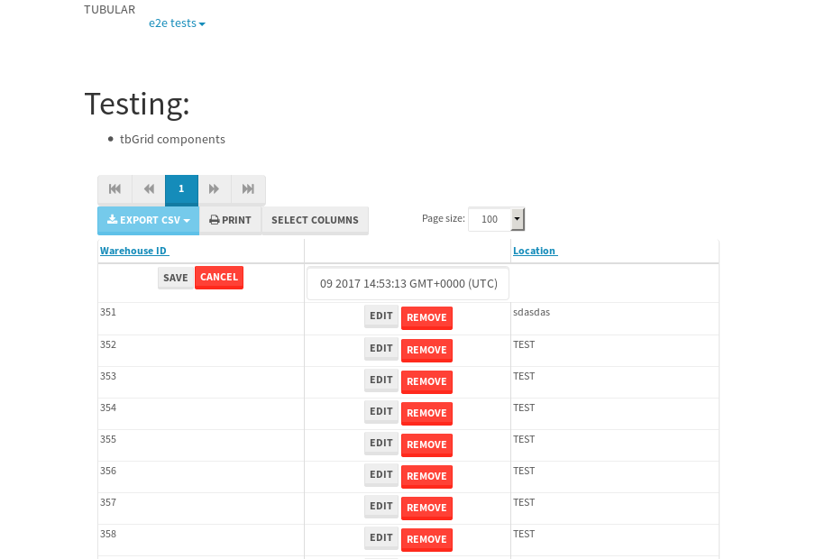

tbColumn.Grid Sorting - 26.494sTests: 5Skipped: 0Failures: 3 should sort data in ascending order then on descending order when sorting by Order Id column - 5.91sExpected '1' to be '500'.✗Expected '20' to be '481'.✗Tests passed: 50.00%should order data in ascending order when click-sorting an unsorted text column - 5.832sTests passed: 100.00%should order data in descending order when click-sorting an ascending-sorted text column - 5.326sExpected 'Advanced Technology Systems' to be 'Vesta'.✗Tests passed: 0.00%should order data in ascending order when click-sorting an unsorted date column - 4.697sTests passed: 100.00%should order data in descending order when click-sorting twice an unsorted date column - 4.723sExpected '12/30/2015' to match /1\/01\/2016/.✗Tests passed: 0.00%
tbEmptyForm - 3.623sTests: 3Skipped: 0Failures: 0 should have an empty required field - 0.324sTests passed: 100.00%should not be able to click on save - 0.029sTests passed: 100.00%should load default value for numeric field - 0.026sTests passed: 100.00%
Tubular Filters.tbColumnFilter - 97.731sTests: 12Skipped: 0Failures: 0 should cancel filtering when clicking outside filter-popover - 7.584sTests passed: 100.00%should disable Value text-input for "None" filter - 5.822sTests passed: 100.00%should disable apply button for "None" filter - 5.977sTests passed: 100.00%should decorate popover button when showing data is being filtered for its column - 11.63sTests passed: 100.00%should correctly filter data for the "Equals" filtering option - 7.601sTests passed: 100.00%should correctly filter data for the "Not Equals" filtering option - 7.456sTests passed: 100.00%should correctly filter data for the "Contains" filtering option - 7.628sTests passed: 100.00%should correctly filter data for the "Not Contains" filtering option - 7.628sTests passed: 100.00%should correctly filter data for the "Starts With" filtering option - 6.434sTests passed: 100.00%should correctly filter data for the "Not Starts With" filtering option - 6.187sTests passed: 100.00%should correctly filter data for the "Ends With" filtering option - 6.222sTests passed: 100.00%should correctly filter data for the "Not Ends With" filtering option - 6.152sTests passed: 100.00%
Tubular Filters.tbColumnDateTimeFilter - 124.849sTests: 12Skipped: 0Failures: 0 should cancel filtering when clicking outside filter-popover - 6.252sTests passed: 100.00%should disable Value text-input for "None" filter - 5.555sTests passed: 100.00%should disable apply button for "None" filter - 5.997sTests passed: 100.00%should clear filtering when clicking on Clean button - 16.663sTests passed: 100.00%should decorate popover button when showing data is being filtered for its column - 11.18sTests passed: 100.00%should correctly filter data for the "Equals" filtering option - 6.384sTests passed: 100.00%should correctly filter data for the "Not Equals" filtering option - 6.408sTests passed: 100.00%should correctly filter data for the "Between" filtering option - 11.216sTests passed: 100.00%should correctly filter data for the "Greater-or-equal" filtering option - 10.843sTests passed: 100.00%should correctly filter data for the "Greater" filtering option - 10.938sTests passed: 100.00%should correctly filter data for the "Less-or-equal" filtering option - 10.918sTests passed: 100.00%should correctly filter data for the "Less" filtering option - 11.272sTests passed: 100.00%
Tubular Filters.tbColumnOptionsFilter - 78.127sTests: 3Skipped: 0Failures: 0 should cancel filtering when clicking outside filter-popover - 7.126sTests passed: 100.00%should decorate popover button when showing data is being filtered for its column - 10.873sTests passed: 100.00%should filter column-elements in accordance to the selected filter when selecting a single option - 48.674sTests passed: 100.00%
Tubular Filters.tbTextSearch - 43.916sTests: 5Skipped: 0Failures: 0 min-chars is not set - 0.074sTests passed: 100.00%should filter data in searchable-column customer name to matching inputted text, starting from 3 characters - 5.861sTests passed: 100.00%should filter data in searchable-column shipper city to matching inputted text, starting from 3 characters - 11.05sTests passed: 100.00%should show clear button when there is inputted text only - 5.669sTests passed: 100.00%should clear filtering when clicking clear button - 15.577sTests passed: 100.00%
tbForm related components.tbCheckboxField - 3.833sTests: 2Skipped: 0Failures: 1 should save changes on "SAVE" - 1.189sExpected 51 to be -1.✗Tests passed: 50.00%should discard changes on "CANCEL" - 1.055sTests passed: 100.00%
tbForm related components.tbDropDownEditor - 5.231sTests: 5Skipped: 0Failures: 0 should set initial input value to the value of "value" attribute when defined - 0.774sTests passed: 100.00%should show the component name value in a label field when "showLabel" attribute is true - 0.761sTests passed: 100.00%should show a help field equal to this attribute, is present - 0.706sTests passed: 100.00%should submit modifications to item/server when clicking form "Save" - 0.934sTests passed: 100.00%should NOT submit modifications to item/server when clicking form "Cancel" - 1.417sTests passed: 100.00%
tbForm related components.tbTextArea - 7.6sTests: 7Skipped: 0Failures: 0 should set initial input value to the value of "value" attribute when defined - 0.724sTests passed: 100.00%should be invalidated when the number of chars is not in the range of "min" and "max" attributes - 1.269sTests passed: 100.00%should show the component name value in a label field when "showLabel" attribute is true - 0.821sTests passed: 100.00%should show a help field equal to this attribute, is present - 0.72sTests passed: 100.00%should require the field when the attribute "required" is true - 0.873sTests passed: 100.00%should submit modifications to item/server when clicking form "Save" - 0.956sTests passed: 100.00%should NOT submit modifications to item/server when clicking form "Cancel" - 1.472sTests passed: 100.00%
tbForm related components.tbDateEditor - 6.307sTests: 6Skipped: 0Failures: 0 should set initial date value to the value of "value" attribute when defined - 0.796sTests passed: 100.00%should be invalidated when the date is not in the range of "min" and "max" attributes - 1.2sTests passed: 100.00%should show the component name value in a label field when "showLabel" attribute is true - 0.672sTests passed: 100.00%should show a help field equal to this attribute, is present - 0.62sTests passed: 100.00%should submit modifications to item/server when clicking form "Save" - 0.831sTests passed: 100.00%should NOT submit modifications to item/server when clicking form "Cancel" - 1.483sTests passed: 100.00%
tbForm related components.tbTypeaheadEditor - 10.324sTests: 7Skipped: 0Failures: 2 should show an options list when there is an API-info/component entered-data - 1.352sTests passed: 100.00%should select the option clicked - 1.27sTests passed: 100.00%should show a "delete" button when an option/match is selected, and delete the option if button is clicked - 1.769sTests passed: 100.00%should show a label value equal to the component name when "showLabel" attribute is true - 1.069sTests passed: 100.00%should require a value when "require" attribute is true - 0.993sExpected false to be true.✗Tests passed: 0.00%should submit modifications to item/server when clicking form "Save" - 1.411sExpected 'Guadalajara, JAL, Mexico' to match 'Portland, OR, USA'.✗Tests passed: 0.00%should NOT submit modifications to item/server when clicking form "Cancel" - 1.482sTests passed: 100.00%
tbForm related components.tbSimpleEditor - 8.268sTests: 9Skipped: 0Failures: 0 should set initial input value to the value of "value" attribute when defined - 0.641sTests passed: 100.00%should be invalidated when the number of chars is not in the range of "min" and "max" attributes - 1.369sTests passed: 100.00%should show the component name value in a label field when "showLabel" attribute is true - 0.694sTests passed: 100.00%should set input placeholder to the value of "placeholder" attribute - 0.883sTests passed: 100.00%should validate the control using the "regex" attribute, if present - 0.802sTests passed: 100.00%should show a help field equal to this attribute, is present - 0.618sTests passed: 100.00%should require the field when the attribute "required" is true - 0.809sTests passed: 100.00%should submit modifications to item/server when clicking form "Save" - 0.845sTests passed: 100.00%should NOT submit modifications to item/server when clicking form "Cancel" - 1.055sTests passed: 100.00%
tbForm related components.tbNumericEditor - 6.143sTests: 7Skipped: 0Failures: 0 should set initial component value to the value of "value" attribute when defined - 0.578sTests passed: 100.00%should be invalidated when the entered number is not in the range of "min" and "max" attributes - 1.1sTests passed: 100.00%should show the component name value in a label field when "showLabel" attribute is true - 0.703sTests passed: 100.00%should show a help field equal to this attribute, is present - 0.627sTests passed: 100.00%should require the field when the attribute "required" is true - 0.701sTests passed: 100.00%should submit modifications to item/server when clicking form "Save" - 0.808sTests passed: 100.00%should NOT submit modifications to item/server when clicking form "Cancel" - 0.938sTests passed: 100.00%
tbForm Connection Error NoModelKey - 4.177sTests: 1Skipped: 0Failures: 0 tbForm connection error functionality - 0.003sTests passed: 100.00%
tbForm Connection Error NoServerUrl - 4.162sTests: 1Skipped: 0Failures: 0 tbForm connection error functionality - 0.002sTests passed: 100.00%
tbGridComponents - 11.602sTests: 6Skipped: 0Failures: 5 should add item with newRow method - 3.789sExpected '410 EDIT REMOVE Tue May 09 2017 14:07:41 GMT+0000 (UTC)' not to be '410 EDIT REMOVE Tue May 09 2017 14:07:41 GMT+0000 (UTC)'.✗Tests passed: 50.00%should add item with newRow method and cancel action - 0.445sFailed: ElementNotVisibleError✗Tests passed: 0.00%should update item with tbSaveButton - 0.964sExpected '' to be 'TEST'.✗Tests passed: 0.00%should NOT update item on cancel Update action - 0.443sFailed: ElementNotVisibleError✗Tests passed: 0.00%should remove item with tbRemoveButton - 1.873sExpected 60 not to be 60, 'should remove the row from the table'.✗Tests passed: 50.00%should NOT remove item on cancel Remove action - 0.654sTests passed: 100.00%
tbGridPager.navigation buttons - 2.819sTests: 1Skipped: 0Failures: 0 should perform no action when clicking on the numbered navigation button corresponding to the current-showing results page - 0.671sTests passed: 100.00%
tbGridPager.navigation buttons.first/non-last results page related functionality - 0.805sTests: 2Skipped: 0Failures: 0 should disable "first" and "previous" navigation buttons when in first results page - 0.117sTests passed: 100.00%should enable "last" and "next" navigation buttons when in a results page other than last - 0.688sTests passed: 100.00%
tbGridPager.navigation buttons.last/non-first results page related functionality - 1.343sTests: 2Skipped: 0Failures: 0 should disable "last" and "next" navigation buttons when in last results page - 0.676sTests passed: 100.00%should enable "first" and "previous" navigation buttons when in a results page other than first - 0.666sTests passed: 100.00%
tbGridPager.page navigation - 5.153sTests: 5Skipped: 0Failures: 0 should go to next results page when clicking on next navigation button - 1.294sTests passed: 100.00%should go to previous results page when clicking on previous navigation button - 1.765sTests passed: 100.00%should go to last results page when clicking on last navigation button - 0.729sTests passed: 100.00%should go to first results page when clicking on first navigation button - 0.704sTests passed: 100.00%should go to corresponding results page when clicking on a numbered navigation button - 0.66sTests passed: 100.00%
tbGridPagerInfo - 6.742sTests: 2Skipped: 0Failures: 0 should show text in accordance to numbered of filter rows and current results-page - 2.162sTests passed: 100.00%should show count in footer - 0.025sTests passed: 100.00%
tbPageSizeSelctor - 16.481sTests: 4Skipped: 0Failures: 0 should filter up to 10 data rows per page when selecting a page size of "10" - 2.95sTests passed: 100.00%should filter up to 20 data rows per page when selecting a page size of "20" - 2.883sTests passed: 100.00%should filter up to 50 data rows per page when selecting a page size of "50" - 3.541sTests passed: 100.00%should filter up to 100 data rows per page when selecting a page size of "100" - 3.134sTests passed: 100.00%
tbSingleForm - 27.896sTests: 8Skipped: 1Failures: 1 should load correct info - 0.001s***Skipped***Tests passed: 0%should change customer name - 3.8sTests passed: 100.00%should save it - 4.097sExpected '' to be 'Saved'.✗Expected '' to be 'Saved'.✗Tests passed: 0.00%should clear the inputs - 3.774sTests passed: 100.00%should update - 3.995sTests passed: 100.00%should reset editor - 3.74sTests passed: 100.00%should not save if not Changes - 4.73sTests passed: 100.00%should not be able to click on save - 3.758sTests passed: 100.00%


{kind=link}
{kind=link}
{kind=link}